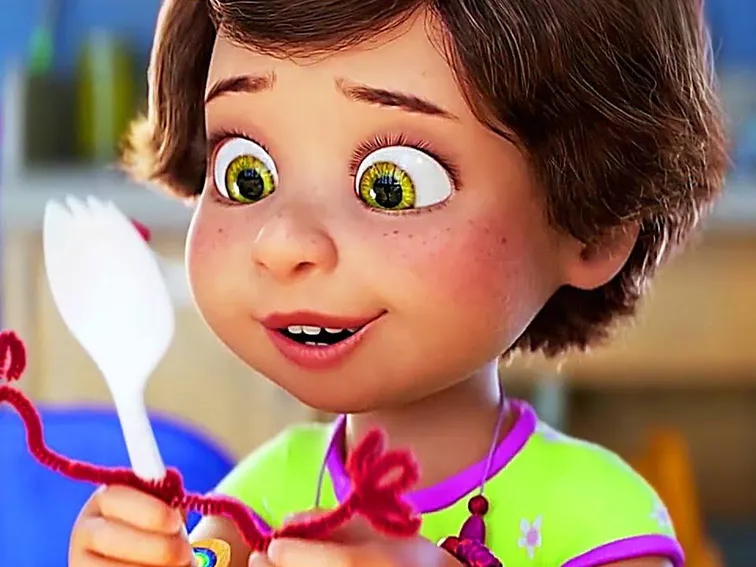
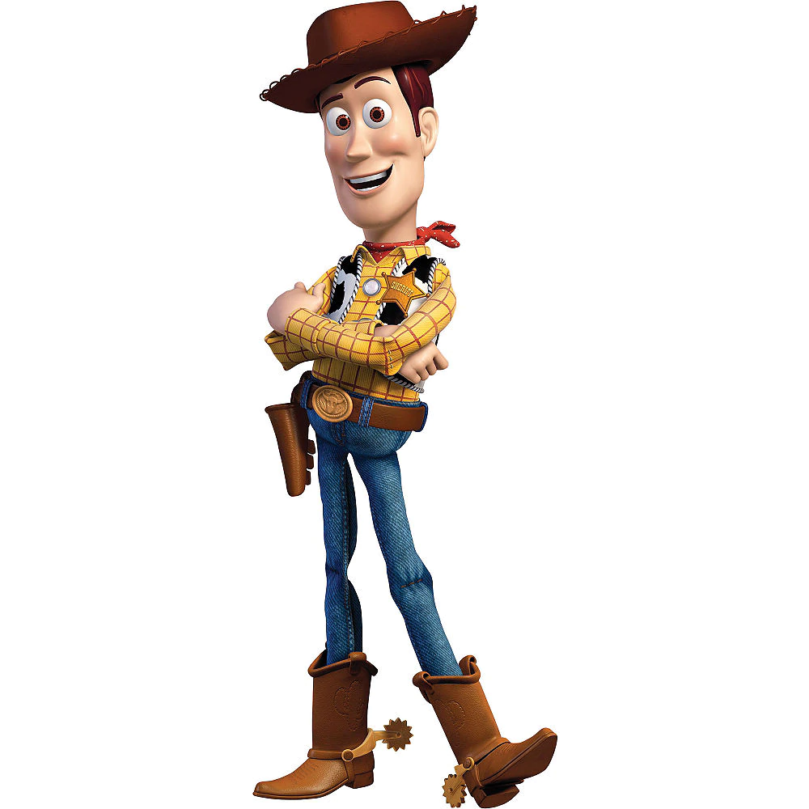
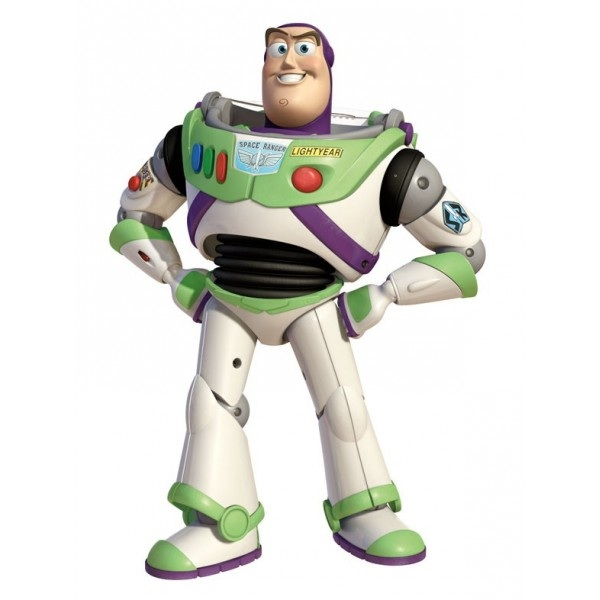

토이스토리4 Toy Story 4
Plot
 During Andy's childhood nine years earlier, R.C. is being swept down a storm drain. Woody leads a successful rescue operation with the help of other toys,
but while they are busy, Bo Peep and her sheep are given away by Andy's younger sister, Molly; despite Woody's efforts to convince her to stay,
Bo reassures him that part of being a toy is being taken away. Woody briefly considers going with her, but after realizing Andy still needs him, bids Bo farewell.
Two years after Andy donates his toys to Bonnie, Woody and the other toys are happy in their new life. Worried that Bonnie will feel overwhelmed at her kindergarten orientation,
Woody—whom Bonnie has recently been neglecting—sneaks into her backpack. Bonnie is nervous and almost cries after a classmate discards her arts and crafts supplies.
Woody covertly recovers some of the materials from the trash, along with a spork. Bonnie turns the spork into a handmade toy she names "Forky". Forky comes to life in Bonnie's backpack, shocking Woody.
At Bonnie's house, Forky experiences an existential crisis, believing that he was made to be trash and not a toy. With Forky having become Bonnie's favorite toy, Woody has to continually prevent him from throwing himself away.
On Bonnie's family's road trip, Forky jumps out of the window and Woody follows him out. Forky finally becomes enthusiastic about being Bonnie's toy after Woody explains that Forky makes Bonnie feel the way trash makes Forky feel.
While heading towards the RV park where Bonnie's family is staying, Woody spots Bo's lamp in an antique store window. Searching for Bo inside, he and Forky encounter a doll named Gabby Gabby and her sycophant ventriloquist's dummies,
the Bensons. Gabby offers to take them to Bo, but soon reveals her true plan to obtain Woody's voice box, since her own is broken and no child will purchase her. Woody flees with Forky, but they are separated. Woody escapes from the dummies, but Gabby captures Forky.
At a playground, Woody reunites with Bo and her sheep Billy, Goat, and Gruff. Bo now lives the free lifestyle of a "lost" toy, but she agrees to help Woody save Forky and get back to Bonnie.
Meanwhile, Buzz searches for Woody on his own, seeking guidance from his inner voice; the button-induced phrases from his own voice box. Buzz finds himself as a carnival prize in a fairground between the RV park and the antique store.
He escapes with plush toys Ducky and Bunny. They meet up with Woody and Bo. Along with pocket toy cop Giggle McDimples and Canadian stuntman toy Duke Caboom, they try but again fail to rescue Forky. Despite Woody's efforts to convince the group to try another rescue attempt,
Bo, unwilling to risk the group's lives, angrily leaves with the others after Woody indirectly insults her. Woody encounters Gabby Gabby again, who tells him of her longing to belong to the store owner's granddaughter, Harmony; Woody gives her his voice box in exchange for Forky.
Woody and Forky enter Bonnie's backpack, which she left at the store. As Bonnie is retrieving it, Forky and Woody watch Harmony reject Gabby. Woody sends Forky back alone, with a message for Buzz to meet them at the carnival's carousel.
Woody comforts Gabby and invites her to become Bonnie's toy. Bo and her friends return to help, and they head for the carnival. Trixie impersonates the RV's GPS and the toys manipulate the controls, taking control of the RV.
When Gabby sees a crying girl lost in the carnival, she decides to become that child's toy; taking responsibility for Gabby, the girl approaches a security guard and is reunited with her parents. At the carousel, Woody and Bo share a bittersweet goodbye.
Realizing Woody feels torn, Buzz tells him that Bonnie will be okay without him. Deciding to stay with Bo, Woody embraces Bonnie's toys farewell and gives Jessie his sheriff badge. The RV departs, and Bonnie's toys leave with her.
In mid-credits scenes, Woody, Bo, Giggle, Duke, Ducky, and Bunny travel with the carnival, helping children win prize toys. On her first day of first grade,
Bonnie makes another new toy: a female plastic knife, to whom Forky eagerly introduces himself.
During Andy's childhood nine years earlier, R.C. is being swept down a storm drain. Woody leads a successful rescue operation with the help of other toys,
but while they are busy, Bo Peep and her sheep are given away by Andy's younger sister, Molly; despite Woody's efforts to convince her to stay,
Bo reassures him that part of being a toy is being taken away. Woody briefly considers going with her, but after realizing Andy still needs him, bids Bo farewell.
Two years after Andy donates his toys to Bonnie, Woody and the other toys are happy in their new life. Worried that Bonnie will feel overwhelmed at her kindergarten orientation,
Woody—whom Bonnie has recently been neglecting—sneaks into her backpack. Bonnie is nervous and almost cries after a classmate discards her arts and crafts supplies.
Woody covertly recovers some of the materials from the trash, along with a spork. Bonnie turns the spork into a handmade toy she names "Forky". Forky comes to life in Bonnie's backpack, shocking Woody.
At Bonnie's house, Forky experiences an existential crisis, believing that he was made to be trash and not a toy. With Forky having become Bonnie's favorite toy, Woody has to continually prevent him from throwing himself away.
On Bonnie's family's road trip, Forky jumps out of the window and Woody follows him out. Forky finally becomes enthusiastic about being Bonnie's toy after Woody explains that Forky makes Bonnie feel the way trash makes Forky feel.
While heading towards the RV park where Bonnie's family is staying, Woody spots Bo's lamp in an antique store window. Searching for Bo inside, he and Forky encounter a doll named Gabby Gabby and her sycophant ventriloquist's dummies,
the Bensons. Gabby offers to take them to Bo, but soon reveals her true plan to obtain Woody's voice box, since her own is broken and no child will purchase her. Woody flees with Forky, but they are separated. Woody escapes from the dummies, but Gabby captures Forky.
At a playground, Woody reunites with Bo and her sheep Billy, Goat, and Gruff. Bo now lives the free lifestyle of a "lost" toy, but she agrees to help Woody save Forky and get back to Bonnie.
Meanwhile, Buzz searches for Woody on his own, seeking guidance from his inner voice; the button-induced phrases from his own voice box. Buzz finds himself as a carnival prize in a fairground between the RV park and the antique store.
He escapes with plush toys Ducky and Bunny. They meet up with Woody and Bo. Along with pocket toy cop Giggle McDimples and Canadian stuntman toy Duke Caboom, they try but again fail to rescue Forky. Despite Woody's efforts to convince the group to try another rescue attempt,
Bo, unwilling to risk the group's lives, angrily leaves with the others after Woody indirectly insults her. Woody encounters Gabby Gabby again, who tells him of her longing to belong to the store owner's granddaughter, Harmony; Woody gives her his voice box in exchange for Forky.
Woody and Forky enter Bonnie's backpack, which she left at the store. As Bonnie is retrieving it, Forky and Woody watch Harmony reject Gabby. Woody sends Forky back alone, with a message for Buzz to meet them at the carnival's carousel.
Woody comforts Gabby and invites her to become Bonnie's toy. Bo and her friends return to help, and they head for the carnival. Trixie impersonates the RV's GPS and the toys manipulate the controls, taking control of the RV.
When Gabby sees a crying girl lost in the carnival, she decides to become that child's toy; taking responsibility for Gabby, the girl approaches a security guard and is reunited with her parents. At the carousel, Woody and Bo share a bittersweet goodbye.
Realizing Woody feels torn, Buzz tells him that Bonnie will be okay without him. Deciding to stay with Bo, Woody embraces Bonnie's toys farewell and gives Jessie his sheriff badge. The RV departs, and Bonnie's toys leave with her.
In mid-credits scenes, Woody, Bo, Giggle, Duke, Ducky, and Bunny travel with the carnival, helping children win prize toys. On her first day of first grade,
Bonnie makes another new toy: a female plastic knife, to whom Forky eagerly introduces himself.
Castings

Bonnie is the owner of the toys

Woody

Buzz
 Bo Peep
Bo Peep
 Forky
Forky
Figures